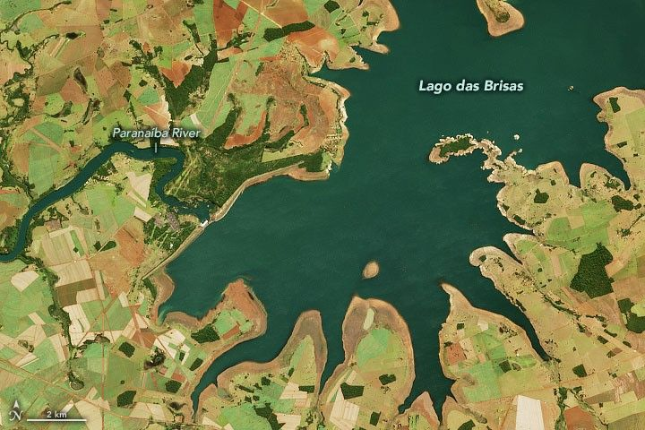
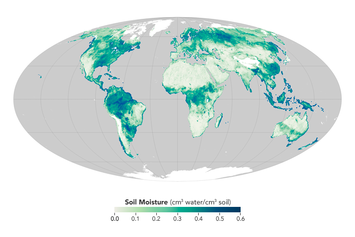
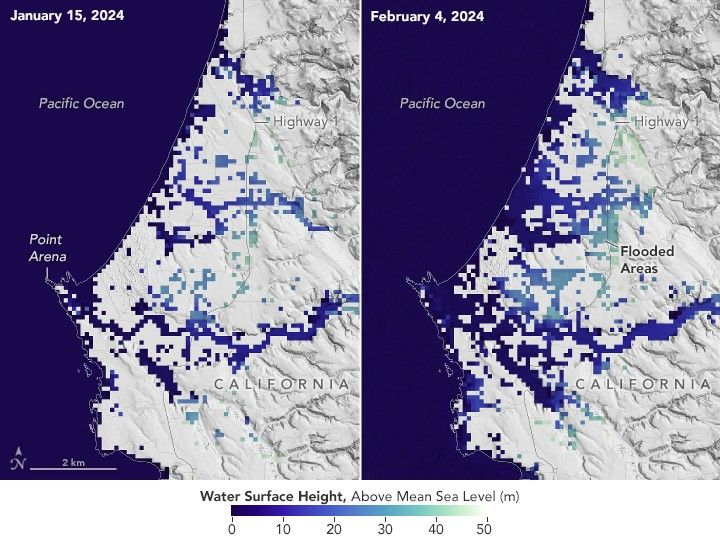
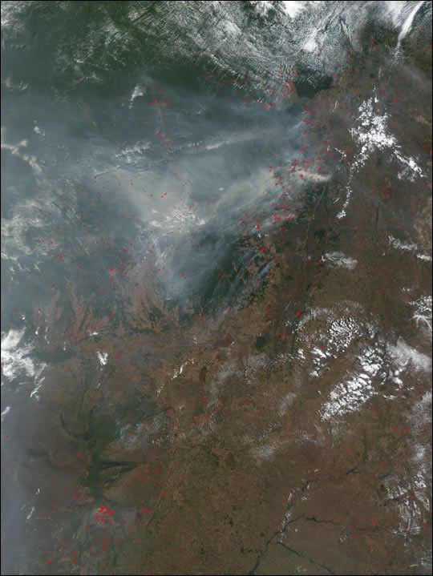
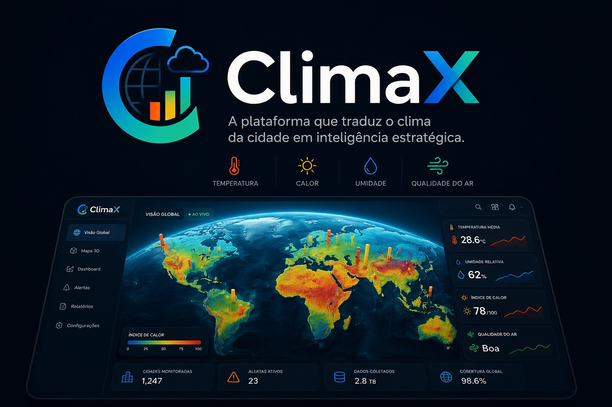
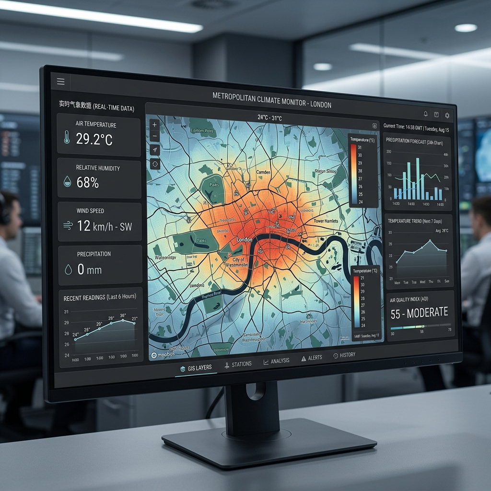
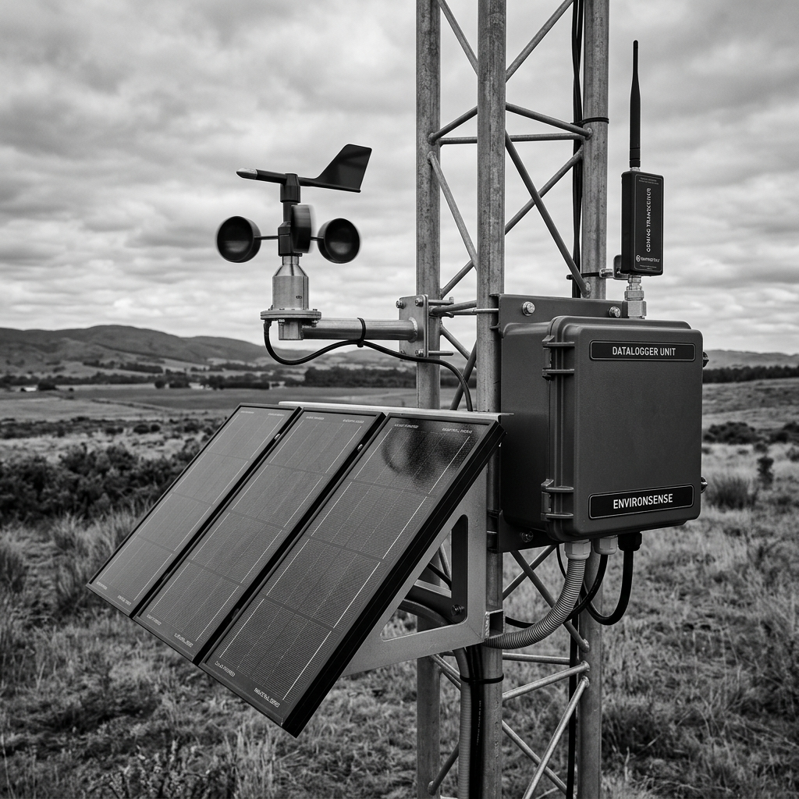
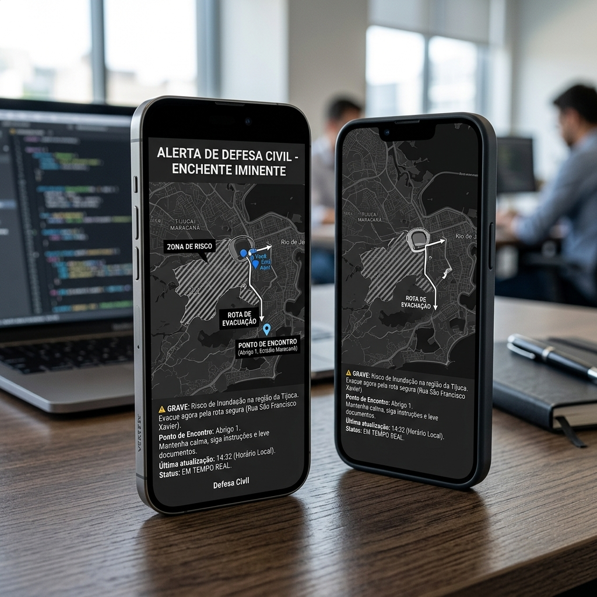
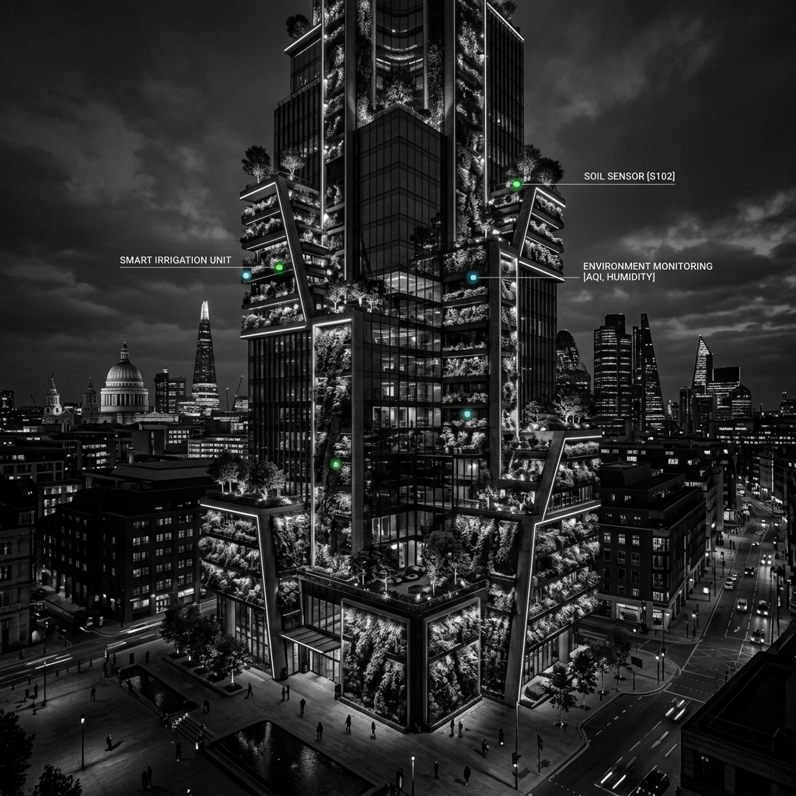
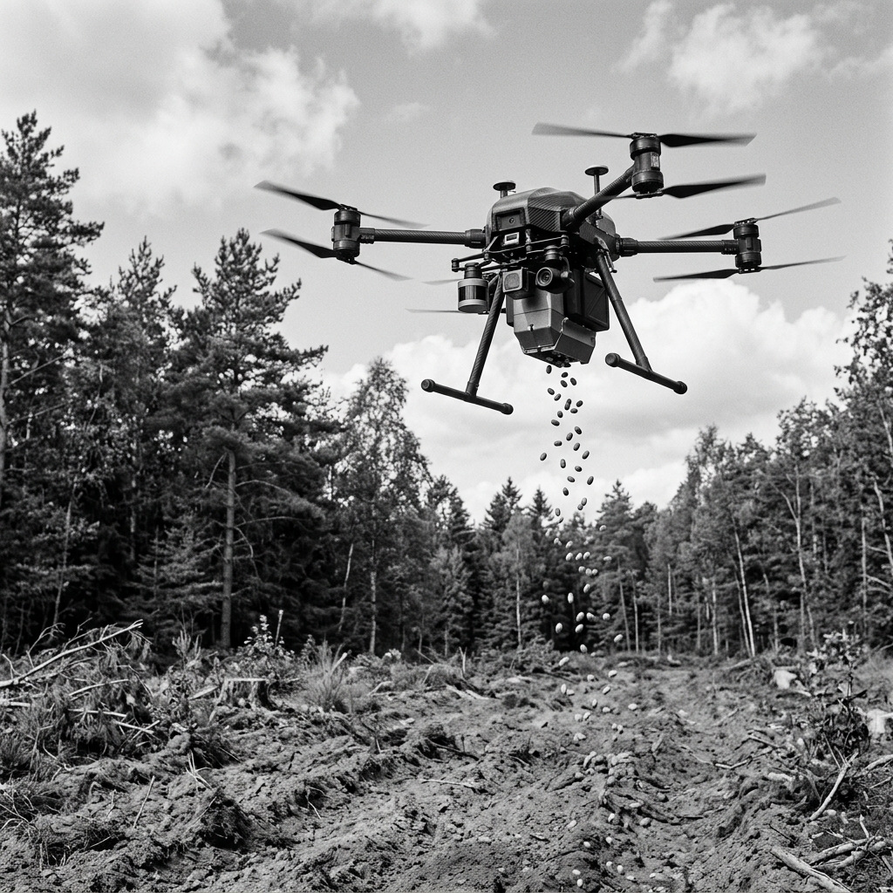

Ilhas de calor urbanas
Superfícies impermeáveis acumulam energia e expõem bairros vulneráveis primeiro.
ClimaX transforma sinais climáticos em decisão urbana.
Temperatura, umidade, vegetação e queimadas hoje aparecem dispersas em fontes separadas. Sem integração, a tomada de decisão pública se torna lenta, pouco visual e ineficaz para priorizar ações preventivas.
O ClimaX cruza imagens orbitais, sensores e fontes públicas para transformar sinais ambientais em leitura de consequência: calor, seca, solo, chuva e fumaça.
Imagem bonita não basta. O dado precisa mostrar onde a cidade vai sofrer primeiro.
Superfícies impermeáveis acumulam energia e expõem bairros vulneráveis primeiro.

Quando o verde recua, a cidade perde resfriamento natural e segurança hídrica.

A umidade do solo antecipa seca, alagamento e perda de conforto térmico.

Eventos extremos revelam rotas críticas e áreas que precisam de resposta imediata.

Queimadas degradam vegetação, pioram o ar e ampliam o risco muito além do foco inicial.

O painel traduz sinais ambientais em leitura simples: verde para estabilidade, amarelo para atenção e vermelho para risco crítico. A cidade enxerga onde agir antes que a resposta atrase.
Um dashboard que não só informa. Ele aponta prioridade.O ClimaX nasce para transformar sinais técnicos em prioridade pública: o que monitorar, onde agir e qual intervenção vem primeiro.
Satélites, sensores e bases públicas já mostram temperatura, solo, ar, vegetação e chuva.
O território deixa de ser abstrato e passa a revelar zonas verdes, amarelas e vermelhas.
Gestores priorizam arborização, drenagem, alertas e equipes antes da crise escalar.





Dados de satélite, sensores e bases públicas reunidos para apoiar obra, manutenção e operação da cidade.
Leitura territorial para mostrar onde calor, pouca vegetação e chuva forte exigem atenção primeiro.
Monitoramento de sinais de risco antes da ocorrência virar emergência para a população.
Temperatura de superfície terrestre e monitoramento térmico global.
Ver maisImagem multiespectral, NDVI e leitura de cobertura vegetal urbana.
Ver maisUmidade do solo para estimar aridez, saturação e risco hídrico.
Ver maisSéries históricas de uso, cobertura da terra e transformação do solo.
Ver maisEstações meteorológicas, alertas, umidade, temperatura e vento locais.
Ver maisMonitoramento de desastres, risco hidrológico e alertas municipais.
Ver maisFocos de calor, queimadas ativas e pressão ambiental no território.
Ver maisReferência editorial para desafio, impacto urbano e solução climática.
Ver mais